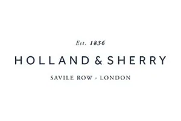
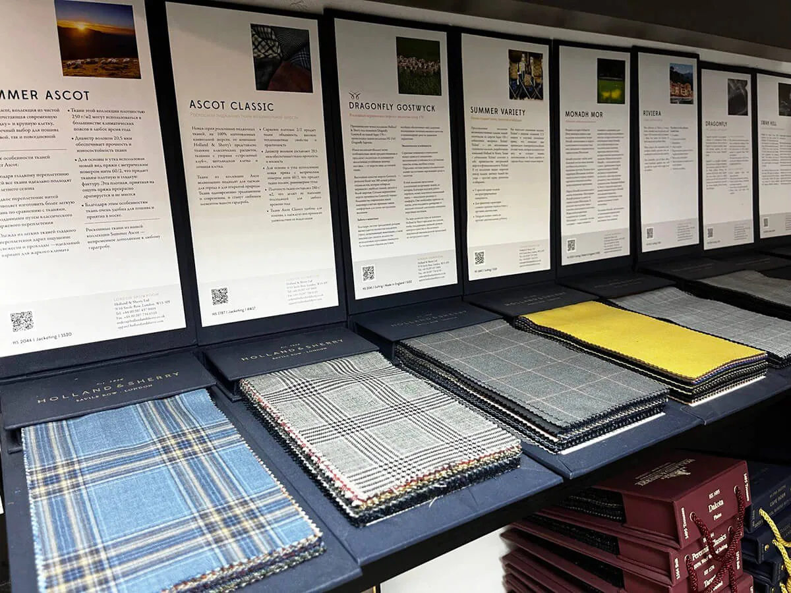
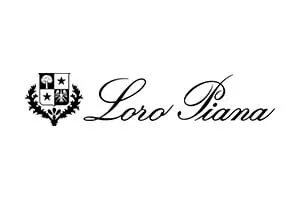
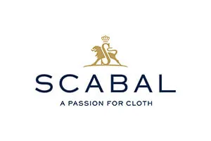
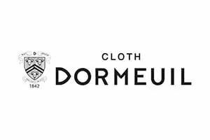
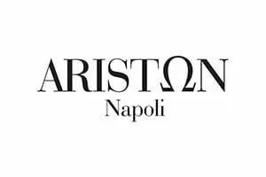
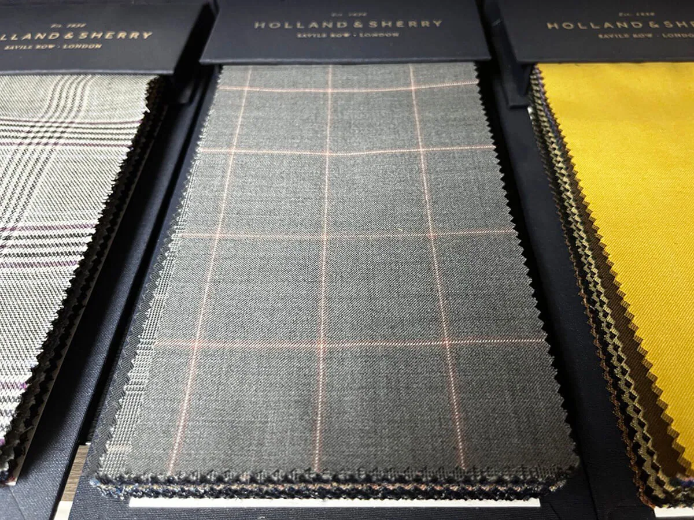
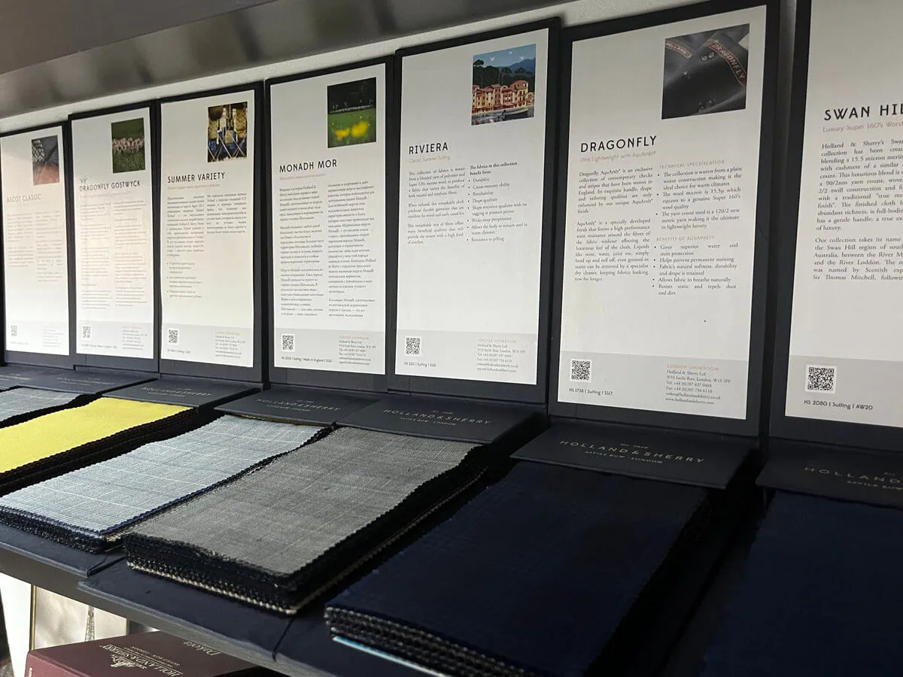
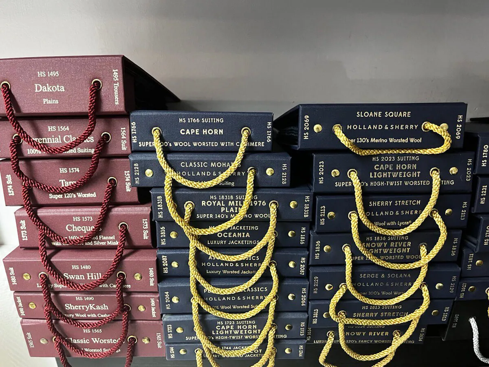

Holland & Sherry
Английская классика. Дом работает с 1836 года. В ателье его образцы можно сравнить при подборе ткани для делового костюма.
Образцы на Тверской
В каталогах ателье больше 5 000 образцов для костюмов, сорочек и пальто. На первой встрече сравним плотность, состав, цвет и рисунок, подберём подкладку.
Подобрать ткань к изделию
Шесть производителей представлены в каталоге ателье. В числе поставщиков мастера также называют Drago.

Английская классика. Дом работает с 1836 года. В ателье его образцы можно сравнить при подборе ткани для делового костюма.

Итальянский дом, известный кашемиром, мериносовой шерстью и викуньей. Образцы помогут почувствовать разницу в мягкости и весе.

В коллекциях встречаются классическая шерсть и кашемир, а также специальные серии с минеральными и драгоценными включениями.

Французский текстильный дом с 1842 года. Выразительные переплетения и рисунки интересны для костюма или непарного пиджака.

Итальянские костюмные, пальтовые и сорочечные ткани. В ассортименте марки есть шерсть, мохер, кашемир, шёлк, хлопок и лён.
Итальянский дом с 1910 года. Сдержанные рисунки и богатый выбор тёмных оттенков подходят для классического делового гардероба.
Альбомы раскрывают полностью на первой встрече. Отдельно сравниваем основной материал и подкладку.


